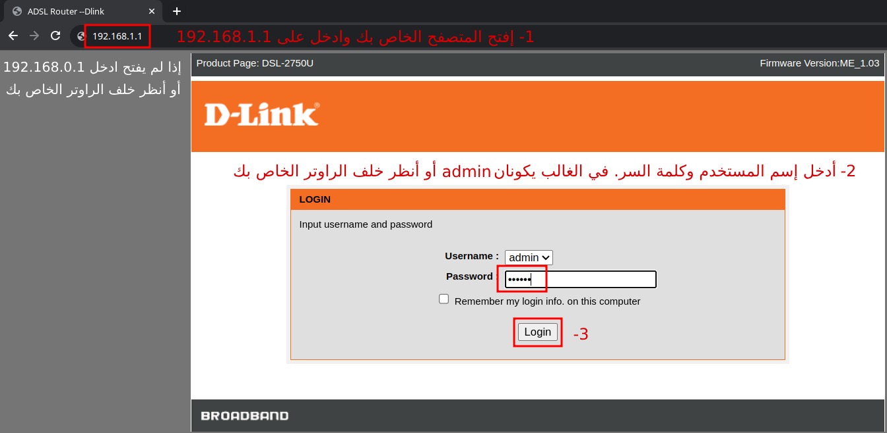
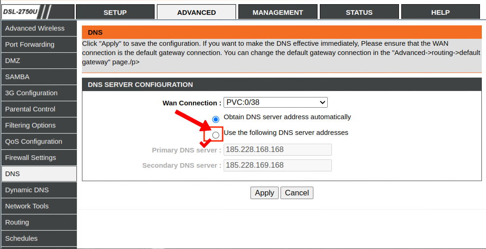
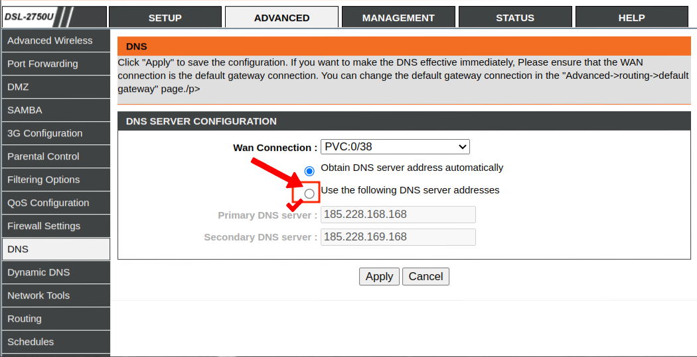

# طريقة 1- عبر الراوتر (Modem):
هذه الطريقة فعالة وسهلة. فقط يكمن الإختلاف في إعدادات الراوتر (Modem) فكل شركة لها إعدادات خاصة ومختلفة. وفي الصور ادناه سنستعمل Modem من نوع D-Link. إذا كان الراوتر الخاص بك يختلف عن D-Link فقط إبحث عن كيفية تغيير إعدادات الـ DNS (أو الشبكة) الخاصة بنوع الراوتر الخاص بك واتبع الخطوات الباقية.

 
